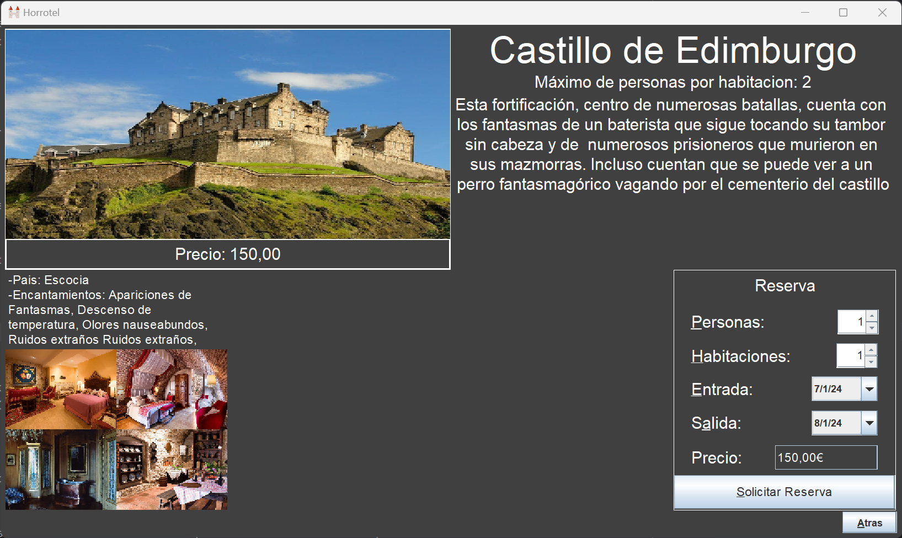
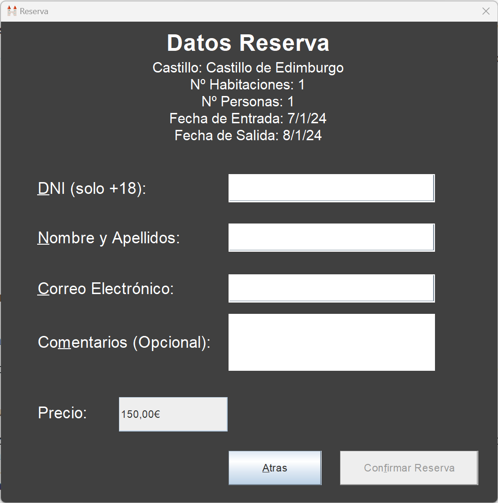

Para realizar una reserva el usuario deberá desplazarse desde la pantalla inicial hasta la pantalla de hoteles por medio de los botones "Empezar" y "Reservar un Hotel".
Una vez en la pantalla de hoteles, el usuario seleccionará el hotel que desea reservar lo que hará que se le muestre una pantalla con la información completa del hotel a reservar
En esta misma pantalla, el usuario dispondrá de un panel en el que configurar su reserva. Para esto seleccionará el número de habitaciones así como el número de personas que figurarán en la reserva. Se ha de tener en cuenta que el número máximo de personas en cada una de las habitaciones es de 2.
A su vez se seleccionará la fecha de entrada y salida del castillo.
Por medio de todos estos datos se calculará el precio final de la reserva y se le mostrará al usuario en la parte inferior del panel. Por medio del botón "Solicitar Reserva" el usuario pasará a la ventana en la que formalizará la reserva
Para formalizar la reserva el usuario deberá aportar los siguientes datos:
Por último, el usuario dispone de un apartado adicional en el que podrá aportar comentarios acerca del proceso de reserva del castillo
Una vez introducidos todos los datos, el usuario deberá pulsar el botón "Confirmar Reserva". Una vez guardada correctamente la reserva se informará al usuario que el proceso ha finalizado de forma satisfactoria